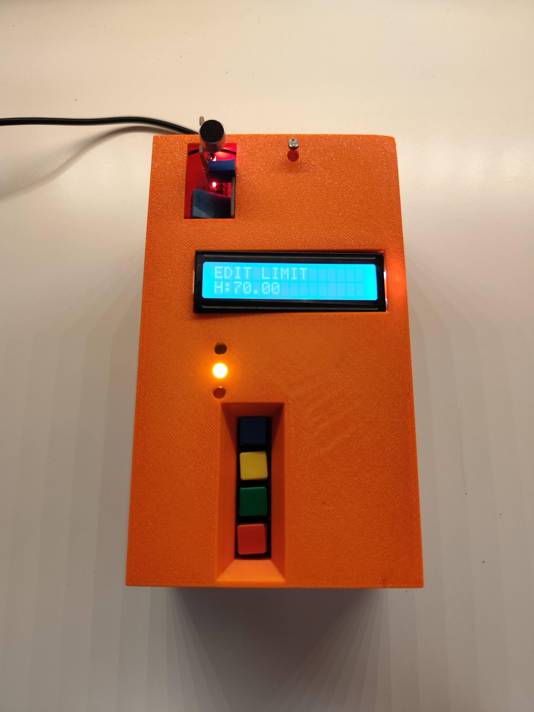

Angehender Maschinenbau-Student
LOGAN
BÖTTGER
Pure Theory. Raw Practice.
LOGAN BÖTTGER
Duales Studium Maschinenbau
Angehender Maschinenbau-Student
Pure Theory. Raw Practice.
Fokussiert auf die Schnittstelle zwischen präziser Berechnung und physischer Konstruktion. Leidenschaft für nachhaltige Systeme und moderne Fertigungstechniken.
Das duale Studium bietet mir die perfekte Kombination: Fundierte theoretische Grundlagen der Ingenieurwissenschaften direkt mit realer Industriepraxis zu verbinden.
Aktive Mitgestaltung innovativer Baugruppen, kinematischer Simulationen und zukunftsfähiger Werkstoffkonzepte im Maschinen- und Anlagenbau.
Technisches Rüstzeug für die Konstruktion von morgen.
Ausgewählte Arbeiten & Simulationen

Konstruktion und Simulation eines zweistufigen Stirnradgetriebes zur Optimierung der Kraftübertragung in kompakten Bauräumen.

Finite-Elemente-Methode Analyse eines Leichtbaurahmens unter statischer Belastung zur Identifikation von Spannungsspitzen und zur Gewichtsreduktion.